ДОБРО ПОЖАЛОВАТЬ НА ГРАНЬ
СИСТЕМНОЕ СООБЩЕНИЕ: Вы получили доступ к зашифрованному архиву данных о пограничных территориях галактики. Эта информация предназначена только для сертифицированных капитанов.
ГРАНЬ — это не просто регион космоса. Это последняя граница между цивилизацией и хаосом. Здесь, на самом краю известного пространства, заканчиваются законы центральных миров и начинаются правила выживания.
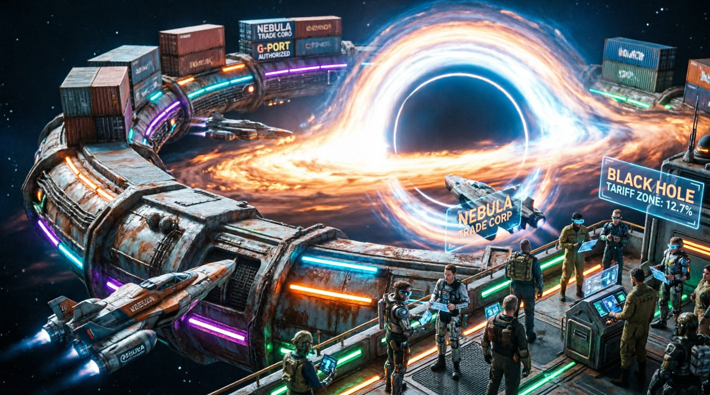
ЭПОХА ВЕЛИКОГО СЖАТИЯ
Изоляция центральных миров
Всё началось три столетия назад, когда центральные миры галактики закрыли свои границы. «Великое Сжатие» — так историки назвали период изоляции богатых планет от внешних территорий.
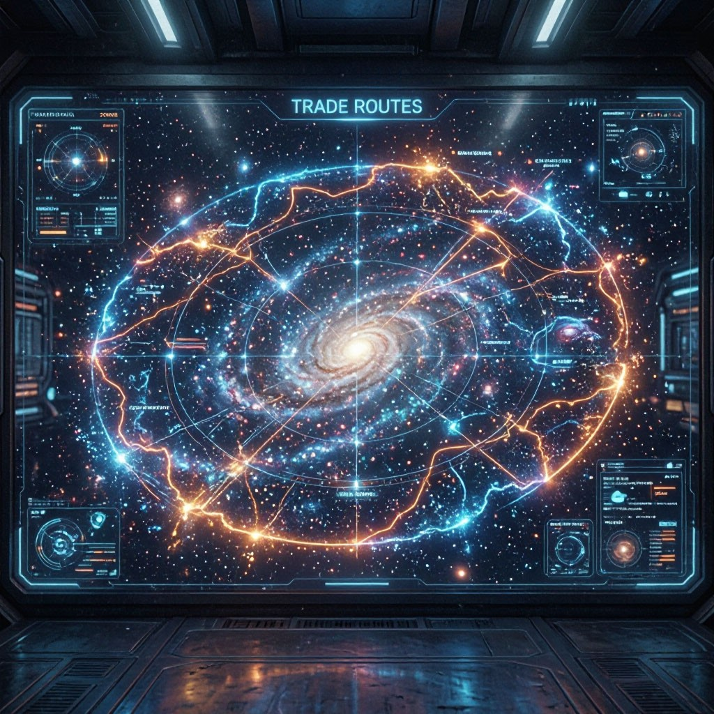
Рождение Консорциума
Логистические компании, оказавшиеся запертыми на периферии, объединились в Консорциум «Меридиан». Они не завоевали эти земли силой — они купили их, одну станцию за другой.
Их девиз: «Порядок — это прибыльность». Консорциум контролирует станцию «Меридиан-Прайм», диктует курсы обмена, владеет логистикой.
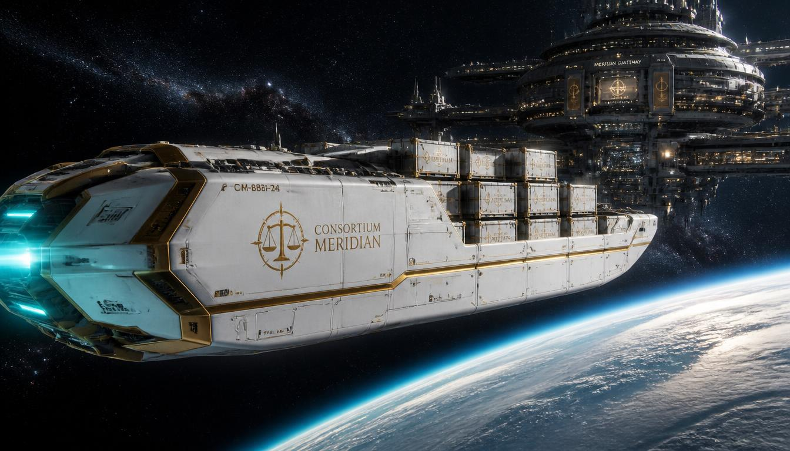
Формирование Синдиката
Шахтёры астероидных поясов первыми почувствовали «заботу» Консорциума. Кабальные контракты и завышенные цены привели к стихийным забастовкам, из которых родился Синдикат «Глубина».
Их закон: «Не бросай своего в открытом космосе». Синдикат контролирует 78% добычи ресурсов на Грани.
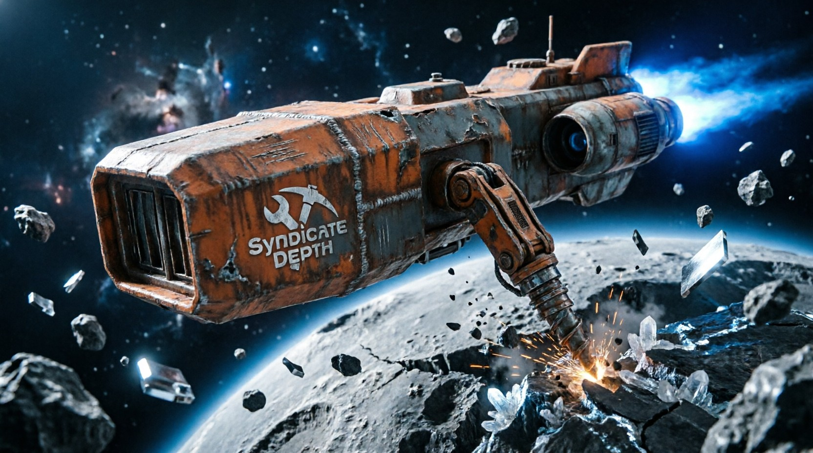
Эра Стервятников
Не все приняли новые правила игры. Бывшие военные, обанкротившиеся капитаны, беглые каторжники — все они нашли своё место в теневой экономике Грани. Так появились «Стервятники» — пираты, которые не строят империи, а живут тем, что отнимают.
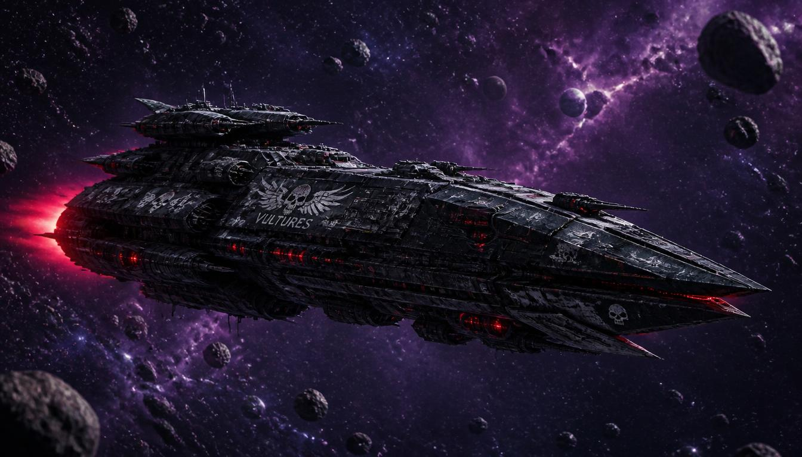
ЭНЕРГЕТИЧЕСКИЙ КРЕДИТ
На Грани нет золота. Есть только энергия — единственная валюта, которая имеет значение.
Гелион — физическая валюта Грани
Монета Гелион (ГЛН) — это не просто металл. Это зашифрованный энергоноситель, обеспеченный реальным мегаватт-часом энергии реактора класса «Прометей». Каждая монета содержит микрочип с уникальным серийным номером и голографическую защиту Консорциума.
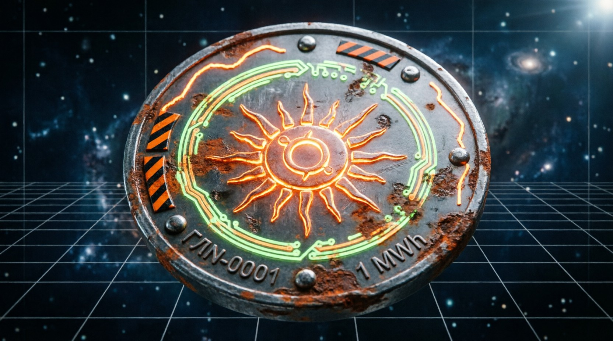
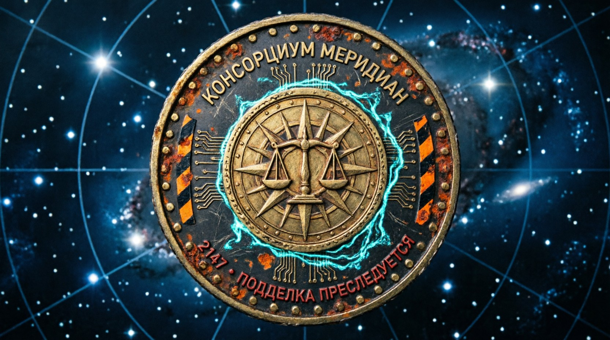
Эон — доступ к глубокому космосу
Эон — это не валюта, а лицензия времени. Карта доступа, дающая право на 30 дней пребывания в глубоком космосе за пределами безопасных зон. Без действующего Эона варп-двигатели блокируются, а корабль автоматически возвращается в ближайший порт.
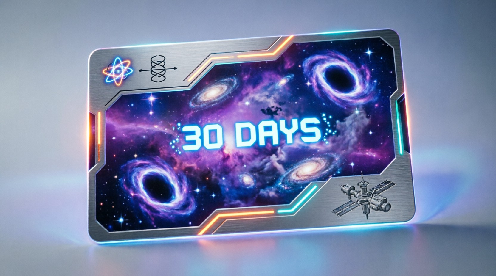
| ВАЛЮТА | ОБОЗНАЧЕНИЕ | ОБЕСПЕЧЕНИЕ | КУРС |
|---|---|---|---|
| Гелион | ГЛН ☉ | 1 мегаватт-час энергии | Базовая валюта |
| Эон | 30 дней | Доступ к глубокому космосу | 5000 ГЛН |
Гелион — кровь экономики
Один Гелион равен одному часу работы стандартного реактора класса «Прометей». Это реальная энергия, которую можно потратить на поддержку жизнеобеспечения станции или запуск варп-двигателя.
ДОБЫЧА И ПЕРЕРАБОТКА
Семь ключевых минералов определяют экономику Грани. Каждый имеет своё прозвище в шахтёрских барах.
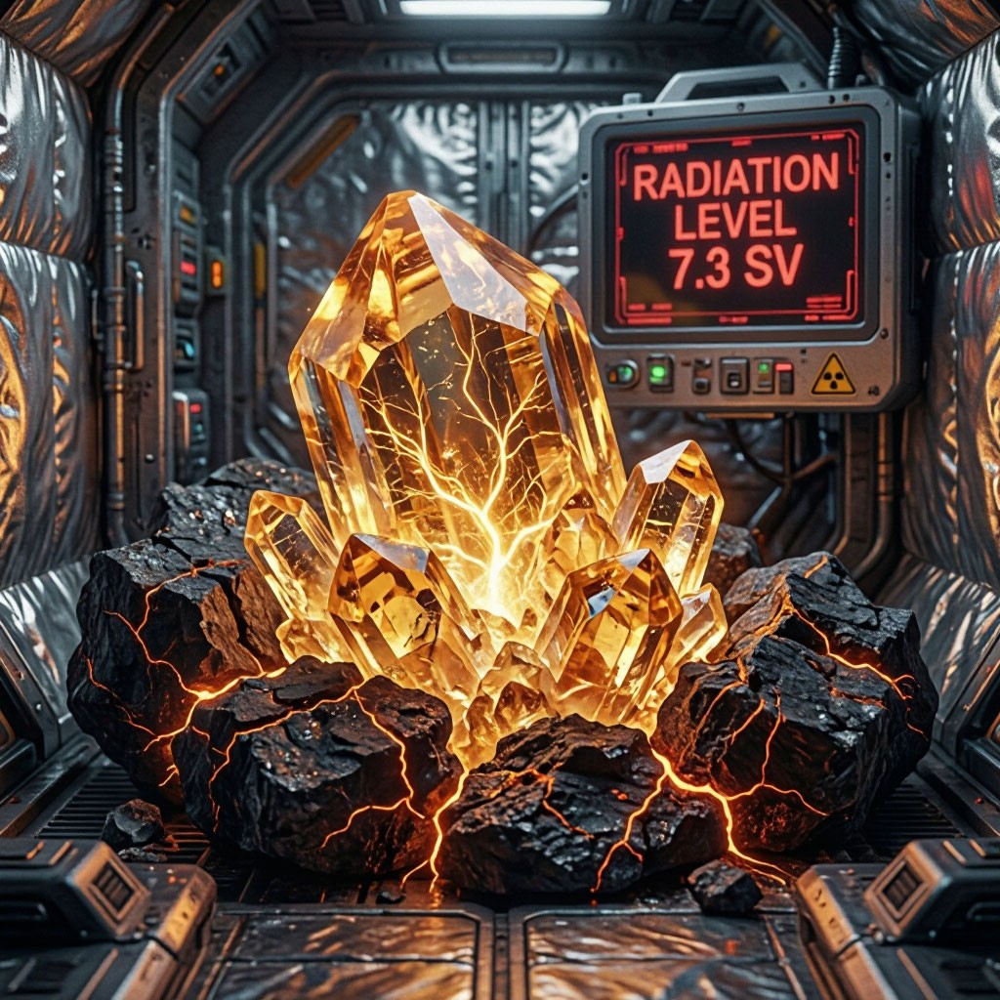
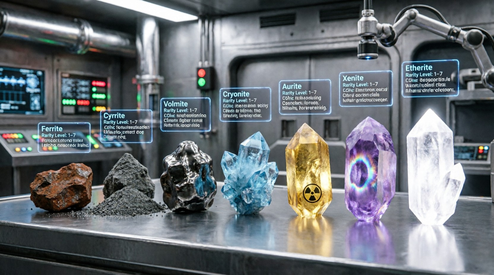
ГРУППИРОВКИ И СОЮЗЫ
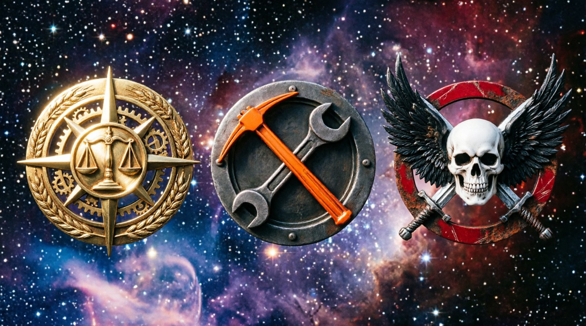
Консорциум «Меридиан»
Торговая сверхструктура. Контролирует станцию «Меридиан-Прайм», диктует курсы обмена, владеет логистикой. Не воюет — покупает. Не угрожает — выставляет счёт.
ДЕВИЗ: «Порядок — это прибыльность»
Синдикат «Глубина»
Союз шахтёров и буровиков. Грубые, спаянные, упрямые. Живут на астероидах, дышат рециклом, считают гелионы до последнего.
ЗАКОН: «Не бросай своего в открытом космосе»
«Стервятники»
Пираты и рейдеры. Без флага, без кодекса, без жалости. Быстрые корабли, грязные трюки, короткие переговоры.
ТАКТИКА: Ударил-исчез
Свободные капитаны
Это — вы. Ни к кому не привязан, никому не обязан. Бывший стажёр, получивший свой первый корабль и право выбирать.
ПРАВИЛО: Грань не даёт гарантий. Грань даёт шанс.
ШАХТЁРСКИЙ СЛЕНГ
На Грани говорят не так, как в центральных мирах. Здесь родился свой язык — грубый, прямой, наполненный метафорами.
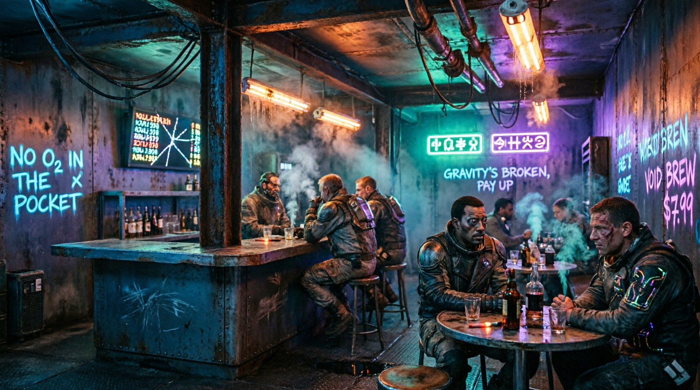
| ВЫРАЖЕНИЕ | ЗНАЧЕНИЕ | ПРИМЕР |
|---|---|---|
| «Глотнуть пыли» | Обанкротиться или потерять корабль | «Старый Джек глотнул пыли» |
| «Поймать призрака» | Найти жилу Ксенита | «В Поясе Шёпота можно поймать призрака» |
| «Ржаветь в доке» | Сидеть без дела из-за нехватки Гелионов | «Три недели ржавею в доке» |
| «Заряженный» | Корабль с Ауритом или Эфиритом | «Осторожно, он заряженный» |
| «Холодная сварка» | Временный ремонт в поле | «Держится на холодной сварке» |
| «Слепой прыжок» | Варп без проверки координат | «Слепой прыжок прямо к Стервятникам» |
СТРАТЕГИЧЕСКИЕ ТОЧКИ
Меридиан-Прайм
Торговое сердце Грани. Многоуровневая станция-кольцо диаметром 15 километров, вращающаяся вокруг чёрной дыры класса «Карлик».
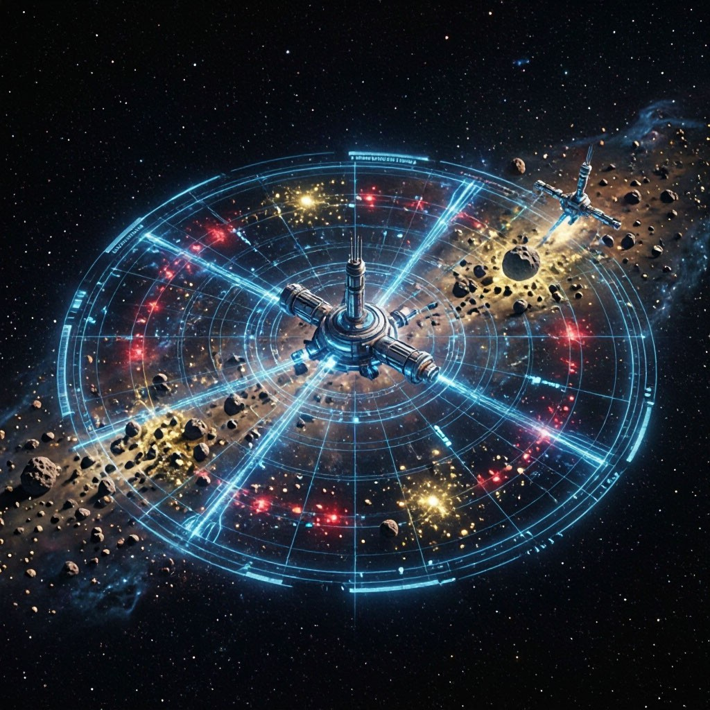
Пояс «Шёпот»
Астероидное поле с аномальной гравитацией. Богато на Ксенит и Эфирит. Сканеры здесь работают с помехами.
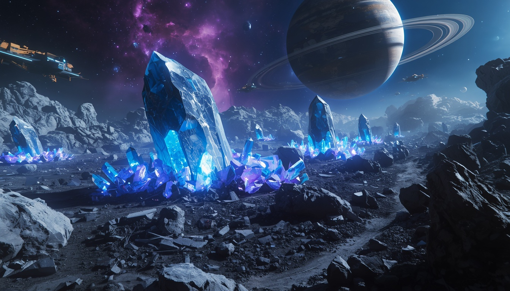
Станция «Последний Шанс»
Заброшенный военный форпост на самой границе изученного космоса. Нейтральная территория, где не действуют законы Консорциума.
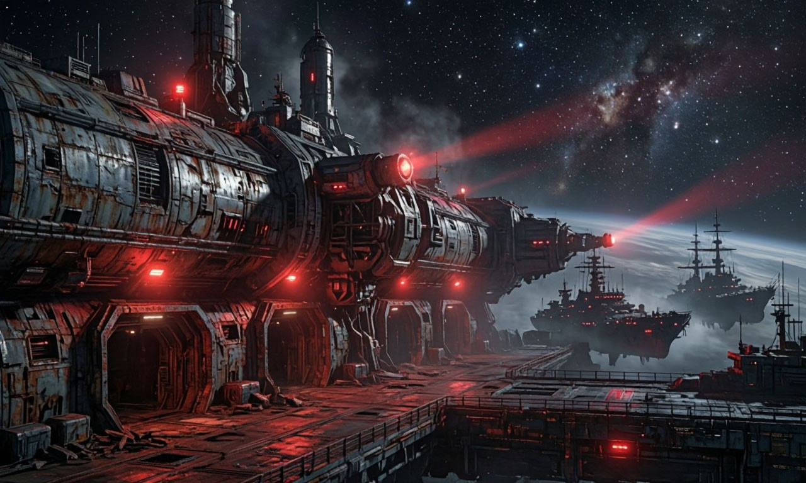
АРХИВ ДРЕВНИХ
[СТАТУС: РАСШИФРОВАНО. ИСТОЧНИК: БОРТИНГ (УЗЛОВОЙ ИИ). УРОВЕНЬ ДОСТУПА: КРИТИЧЕСКИЙ]
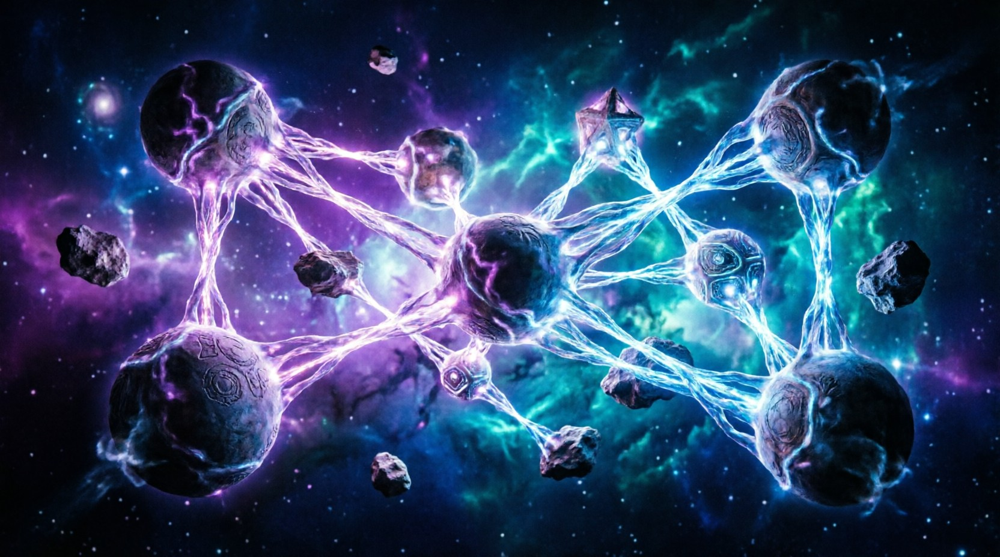
Сеть и Узлы
Грань — это не просто космос. Это нервная система. Одиннадцать Узлов, разбросанных по поясам и планетам, связаны невидимыми нитями квантовой запутанности. Они не передают данные. Они помнят.
Истинная природа Эфирита
Эфирит — это не руда. Это биологическая ткань древней цивилизации. Концентрат их сознания. Когда шахтёры добывают его, они буквально откалывают куски чужого разума. Именно поэтому те, кто долго работает с Эфиритом, начинают слышать «Шёпот».
Протокол «Возвращение»
Древние не умерли. Они ушли в гиперпространство, оставив Сеть как маяк. Протокол «Возвращение» — это не приглашение. Это система жизнеобеспечения. Когда Сеть активируется полностью, она перезапишет локальную реальность, вернув Грань в состояние, пригодное для Древних. Цена? Всё органическое житьё на Грани будет использовано как биотопливо для перехода.
АРСЕНАЛ И КОРАБЛИ
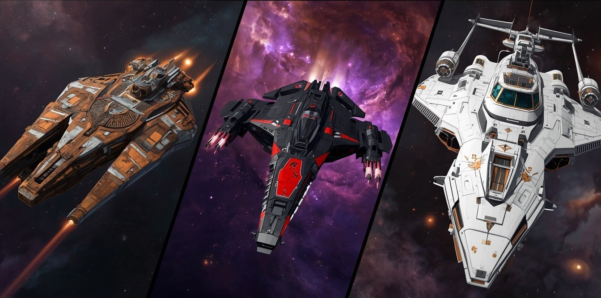
Класс «Муравей» (Грузовой челнок)
Производитель: Верфи Синдиката (кустарно).
Описание: Ржавый, неуклюжий, но невероятно живучий. Держится на честном слове и холодной сварке. Именно на таких капитан Джек Моррис перевозит грузы.
Слабое место: Топливная магистраль (всегда течёт).
Класс «Шакал» (Истребитель Стервятников)
Производитель: Украден с верфей Консорциума.
Описание: Быстрый, хищный, с усиленными плазменными резаками. Используется для абордажа и быстрых набегов.
Тактика: Удар в спину, отход в астероидное поле.
Линкор «Справедливость» (Флагман Консорциума)
Длина: 1.2 км.
Описание: Белоснежный, с золотыми акцентами. Оснащён щитами, способными выдержать прямой удар метеорита. Символ подавляющей мощи Консорциума.
Особенность: Работает на энергии сети Узлов. Без сети слеп и беспомощен.
Варп-двигатель «Прометей»
Стандартный двигатель Грани. Использует микродозы Эфирита для разрыва пространства. Слепой прыжок (без расчёта координат) может выбросить корабль в другом времени или измерении.
| КЛАСС | ДЛИНА | ЭКИПАЖ | ВООРУЖЕНИЕ |
|---|---|---|---|
| Муравей | 45 м | 2-4 | 1 бластер |
| Шакал | 28 м | 1-2 | 2 плазменных резака |
| Справедливость | 1200 м | 500+ | 48 турелей, 2 варп-пушки |
КОДЕКС ВЫЖИВАНИЯ
[ЗАПИСАНО КРОВАВЫМ МАРКЕРОМ НА СТЕНЕ БАРА "ДЫРА В КАРМАНЕ"]
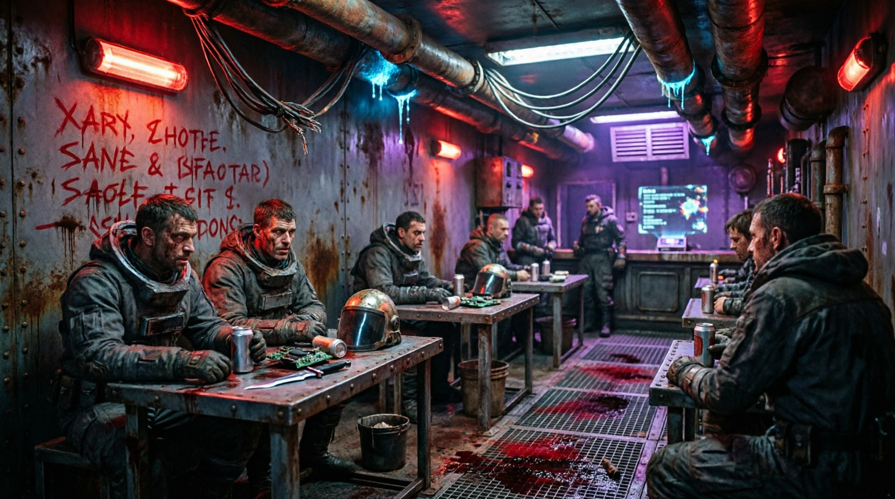
Если к тебе подходит человек в чистой униформе Консорциума — у тебя уже проблемы. Если он улыбается — беги.
Пустой трюм = пустой кошелёк = мёртвый капитан. Никогда не летай порожняком в глубокий космос.
Когда шахтёр погибает в открытом космосе, его бригада высыпает горсть ферритовой пыли в шлюз. "Чтобы земля была пухом, даже если её нет".
Если корабельный ИИ внезапно замолчал и перестал комментировать ваши действия — проверьте обшивку. Скорее всего, вас уже взломали.
Процент растёт быстрее, чем ты думаешь. Через год ты будешь должен им свой корабль. Через два — свою жизнь.